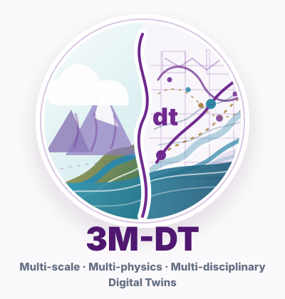
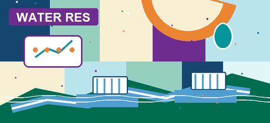

Atmospheric Water Resource Utilization
Aggregation mechanisms, acoustic technology, cloud-precipitation conversion, application practice, and effect evaluation.
MoreCoastal engineering | Hydro-meteorology | Digital twins
Senior Research Fellow at the National University of Singapore, working with NUS-CCL Lab across atmospheric water resources, hydro-meteorological hazards, coastal extremes, and physics-guided digital twins.
NUS-CCL Lab and Coastal Protection and Flood Resilience Institute Singapore, Civil and Environmental Engineering, NUS
Water resources and water-related hazards across the hydrosphere.
Selected in 2023 among seven scientists nationwide in the science category.
Research Profile
We advance digital twin technologies rooted in physical mechanics and high-fidelity numerical simulation, integrating monitoring data and AI for diagnosis, prediction, regulation, and risk management across hydraulic and hydrometeorological systems in the hydrosphere. The framework follows a 3M-dt logic: multi-scale, multi-physics, and multi-disciplinary digital twins from fundamental mechanics to practical applications.

3M-dt Philosophy
From accumulated steps, a thousand-mile journey; from physical traces, a living digital twin.
The integral metaphor frames digital twins as accumulated evidence over time: physical processes, monitoring data, and high-fidelity simulation are continuously integrated into a dynamic virtual hydrosphere.
Aggregation mechanisms, acoustic technology, cloud-precipitation conversion, application practice, and effect evaluation.
More
Beijing ecological replenishment, source-region hydrological-cycle features, available surface-water resources, and basin regulation.
MoreResilient-city assessment in Beijing and flood-protection resilience under climate change, storm surge, and sea-level rise in Singapore.
MoreMechanisms, experiments, numerical models, and field tests for oil-spill response, porous floating breakwaters, and coastal emergency protection.
MoreMultiphase mechanisms, sediment transport, local scour, structure safety, and hydrodynamic modeling across hydraulic systems.
MoreWave and tidal-current energy, ocean clean-energy devices, and hydro-wind-solar complementarity for river-basin applications.
MoreExperience
Senior Research Fellow and CFI Research Manager, advised by Prof. Yuzhu Pearl Li.
Research Fellow, Shuimu Scholar, advised by Prof. Guangqian Wang and Prof. Jiahua Wei.
Research Assistant in hydrodynamic modeling and laboratory wave-current experiments.
Ph.D. in Coastal Engineering. Thesis on WCSPH simulation and experimental research of flexible floating oil booms.
Awards and Honors
Contact
Civil and Environmental Engineering, National University of Singapore. 3 Engineering Drive 2, Queenstown, Singapore 117578.
The Computational Coastal Lab at National University of Singapore (NUS-CCL) is led by Prof. Yuzhu Pearl Li. A Humboldt Scholar and former Marie Curie Fellow, she researches coastal protection and climate resilience, chairs IES Singapore's Technical Committee on Climate Change, and serves as Associate Editor of Coastal Engineering.
CFI Singapore is the nation's first Centre of Excellence dedicated to coastal protection and flood management research and solution development. As a key pillar under PUB's Coastal Protection and Flood Management Research Programme, CFI is hosted by NUS with partner institutions including NTU, SIT, SUTD, and A*STAR, supporting government and industry in addressing sea level rise, extreme rainfall, and long-term climate resilience.